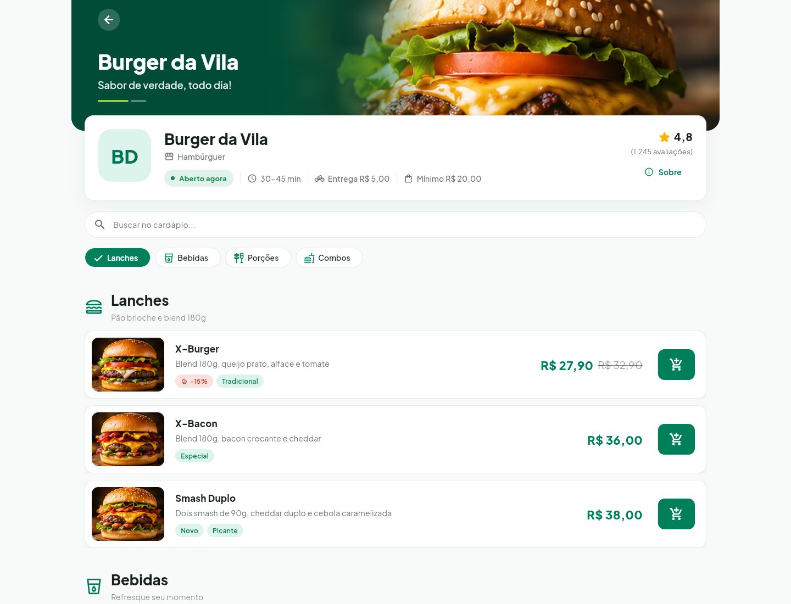
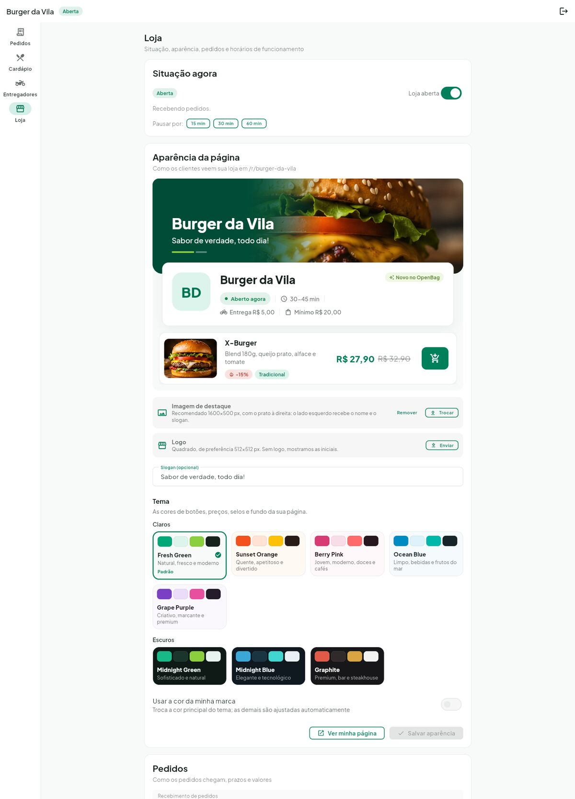

Pequenos negócios merecem ser vistos
O OpenBag dá a pequenos restaurantes uma página própria, cardápio online e controle da operação. Quando possível, trabalhamos junto com as cooperativas de entregadores da cidade.

Nossa proposta
Dar visibilidade a quem faz comida boa no bairro e, se possível, ajudar os entregadores a trabalhar de forma organizada e justa.
Para pequenos negócios
Uma vitrine própria e as ferramentas do dia a dia.
- Página com a cara da sua loja
- Cardápio com complementos e combos
- Pedidos em tempo real e tela da cozinha
- Caixa e acerto com entregadores
Para cooperativas e associações
Organização do trabalho dos entregadores.
- Gestão de membros e convites
- Tabela de entrega própria
- Ofertas que priorizam quem ganhou menos no dia
- Rotas que economizam sem reduzir o ganho
Para quem pede
Um jeito simples de pedir de quem está perto.
- Restaurantes da sua região
- Pedido pelo navegador ou pelo celular
- Pagamento na entrega
- Acompanhamento do pedido
Duas formas de usar
Com uma associação ou cooperativa Recomendado
É importante ter um acordo com a associação ou cooperativa de entregadores da sua região. Nele vocês combinam a tabela de entrega, quem atende a loja e como fica o acerto. O sistema cuida da chamada dos entregadores, das rotas e do caixa.
Só o seu negócio
Sem acordo, você pode usar o OpenBag só para divulgar e controlar o seu negócio: página, cardápio, pedidos, cozinha e caixa, com a sua própria equipe de entrega.
As telas da versão 0.3.0
Capturas do sistema funcionando. Clique em uma imagem para ver no tamanho real.
Sua loja, do seu jeito
O restaurante personaliza a própria página e vê o resultado ao vivo antes de salvar.
- 8 temas prontos, 5 claros e 3 escuros
- Opção de usar a cor da sua marca
- Imagem de destaque, logo e slogan
- Seções do cardápio com ícones

Operação do restaurante
Pedidos em tempo real, cozinha, comanda impressa, rotas de entrega e o caixa com o acerto de cada entregador. Pedidos do balcão, do telefone e do WhatsApp entram no mesmo fluxo (em testes).
Cliente
ProntoVitrine, página da loja, carrinho, cadastro no meio da compra, pagamento na entrega, entregador no mapa e avaliação do pedido.
Entregador
ProntoOnline e offline, ofertas em tempo real, rotas com várias entregas no mapa, ganhos por período, avaliações e perfil público com placa QR.
Cooperativa
ProntoMembros, convites e tabela de entrega. Lojas parceiras com o aceite dos dois lados e uma tabela especial combinada com cada loja. Mensalidade fixa ou percentual com teto, seguro de vida, caixinha solidária, painel financeiro, convênios, enquetes e atas para os cooperados.
Como funciona
Do cadastro da loja até a entrega.
Cadastro
A loja se cadastra e monta a página e o cardápio.
Acordo
Se quiser, combina com uma associação ou cooperativa da região.
Pedido
O cliente pede pela página da loja, no navegador ou no celular.
Preparo
A loja recebe o pedido na hora e prepara na cozinha.
Entrega
Sai com um entregador da cooperativa, um fixo ou a equipe da loja.
Roadmap
Cada etapa vira uma nova versão, seguindo o Versionamento Semântico.
0.1.0MVP
Lançada- Cadastro, onboarding do restaurante, carrinho, pedidos, mapas com OpenStreetMap e login com JWT.
0.2.0Operação do restaurante, associações e personalização
Lançada- Pedidos em tempo real, cozinha, comanda, cardápio com combos, rotas e caixa.
- 8 temas e cor da marca para a página da loja.
- Associações com membros, convites e tabela de entrega.
0.3.0Entregador, cooperativa e cliente
Lançada- Telas do entregador e painel da cooperativa, com lojas parceiras, tabela especial e relatórios.
- Gestão da associação: mensalidade, seguro, caixinha solidária, financeiro, convênios, enquetes e atas.
- Taxa de entrega por distância, com "a partir de" na vitrine.
- Fluxo do cliente com avaliações, página da loja otimizada para buscadores e vitrine por proximidade.
0.4.0Segurança, integridade dos dados e pedido do balcão
Atual- Race conditions: ofertas, status do pedido, caixa e faturas à prova de ações simultâneas.
- Rate limiting e throttling: login, cadastro, pedidos, envio de arquivos, localização do entregador, WebSocket e jobs.
- Idempotência: a mesma ação nunca é aplicada duas vezes, nem com a rede caindo no meio.
- Migrações versionadas, restrições no banco e revisão de segurança.
- Pedido do balcão, do telefone e do WhatsApp, no mesmo fluxo dos pedidos online e testado no celular.
0.5.0Operação do dia a dia
Próxima- Ocorrências ligadas ao pedido.
- Km, tempo, médias e custo estimado do veículo para o entregador.
- Comunicados da cooperativa e PIN de entrega.
0.6.0Auditoria de dados
Planejada- Trilha de auditoria: quem mudou o quê e quando, com o antes e o depois.
- Histórico que não pode ser alterado para caixa e ganhos.
- Relatórios exportáveis e LGPD.
0.7.0Pronto para o piloto
Planejada- Recuperação de senha e confirmação de email.
- Avisos com o app em segundo plano e sessão mais segura.
- Termos de uso, privacidade, publicação com HTTPS e backup.
1.0.0Primeira versão estável
Planejada- Piloto real com uma cooperativa e duas ou três lojas. API estável e app web publicado.
Versões no formato MAIOR.MENOR.CORREÇÃO. Regras e histórico completos no
CHANGELOG.
Documentação
Tudo que você precisa para entender, rodar e contribuir. Documentação da versão 0.4.0.
Quer saber mais?
Quer usar o OpenBag na sua cidade, trazer a sua cooperativa ou contribuir com o projeto? Fale com a gente.